- Single cell bacterial DNA sequencing
- scMicrobe PTA: near complete genomes from single bacterial cells.
- Anti-PD-1 Immunotherapy Resistance
- Mutational Landscape of Melanoma Resistance to Anti-PD-1 Immunotherapy.
- Accurate Preimplantation Genetic Testing
- Utilizing the PTA single-cell amplification technology for improved preimplantation genetic testing.
- cfDNA Monitoring in ALL
- Leukemic and microbial disease burden monitoring in ALL patients using cell-free DNA.
- Whole Genome Amplification
- Innovative biochemical improvements for single-cell whole genome DNA sequencing.
- Gene Therapy Thesis
- Literature review of tissue- and cell-type specific promoters in lentiviral gene therapy.
- Growth Rate Analysis
- Automated data pipeline for measuring cell growth rates.
- DisA Literature Review
- Literature review of the microbial DNA repair regulator DisA.
- Vocal Fold Paralysis
- Brain networks, vocal motor control, and auditory processing in vocal fold paralysis patients.
- Microbial Fuel Cells
- Investigating how different anode material can improve voltage capture in MFCs.
Research
Single cell bacterial DNA sequencing
Connection: Since September 2019, I've been a data analyst for the Gawad Lab at Stanford.
Objective: Most bacteria are not culturable in traditional laboratory settings. Accurate DNA sequencing requires a multitude of DNA fragments, either by collecting many genetically identical single cells / bacteria or by DNA amplification (of which traditional methods for single cell amplification are inaccurate). These facts mean that understanding the genetics of most bacteria was impossible... until now!
Summary: We applied the Gawad lab's primary template-directed amplification (PTA) method for single-cell whole-genome DNA amplification to single bacteria. Taxonomically diverse genomes recovered from aquatic and soil microbiomes using PTA had a median completeness of 81%, whereas genomes from standard multiple displacement amplification-based approaches were usually <30% complete. PTA-derived genomes also included more associated viruses and biosynthetic gene clusters.
ISME Communications Link: scMicrobe PTA: near complete genomes from single bacterial cells
doi: 10.1093/ismeco/ycae085
PMID: 39021442
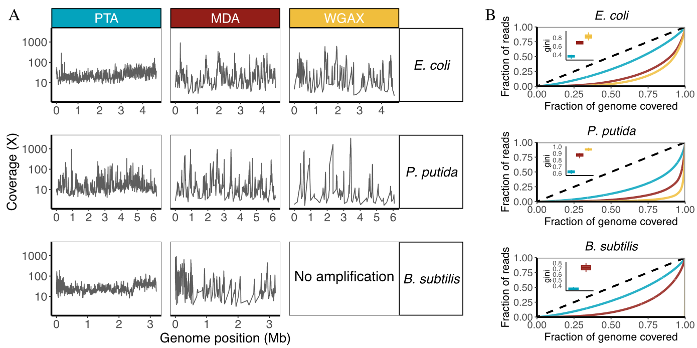Figure 1 A and B - PTA amplication of multiple bacteria resulted in higher coverage (A) and higher equality of coverage across the genome (B) compared to other leading methods
Anti-PD-1 Immunotherapy Resistance
Connection: From September 2021 to November 2021, I completed this small meta-analysis along with a group of my fellow 2nd year medical school peers as our research project for our Academic Research Study course at CUSM.
Objective: Understanding the molecular basis of immunotherapy-resistant cancers will allow oncologists to plan more effective cancer treatment regimens. We sought to further study mutations across a number of experiments to determine whether certain mutations drive drug resistance or are especially sensitive to drugs.
Method: We looked at the DNA mutations and clinical responses in three experiments involving melanoma treated with Anti-PD-1 immunotherapy and identified mutations shared between patients with similar clinical outcomes.
Results: Many mutations were shared between patients within studies, but no high-quality mutations were shared between studies. When narrowing down mutations to those with a frequency of less than 1% in the general population, we found the most prevalent mutations found in those resistant to PD-1 immunotherapy were in the genes IL17RE and FMNL3.
Conclusion: This analysis provides important correlations between mutations and treatment outcomes which may be used to inform clinical management of melanoma patients based on the mutations present in a patient's tumor biopsy.
PDF: Mutational landscape of melanoma resistance to immune checkpoint inhibitors
Accurate Preimplantation Genetic Testing
Connection: Since September 2019, I've been a data analyst for the Gawad Lab at Stanford.
Summary: Using the Gawad lab's primary template-directed amplification (PTA) method for single-cell whole-genome DNA amplification, we were able to improve the coverage and accuracy in the detection of mutations in early embryo biopsies. This method allows for the detection of aneuploidy, known disease-causing variants, de novo mutations, and the computation of polygenic risk scores (PRSs) for multifactorial diseases. PRSs utilize the information from millions of common genetic variants to estimate the risk of developing certain diseases such as Coronary artery disease (CAD) and Schizophrenia (SZA). These diseases do not stem from a single gene mutation but instead have many factors and thus require large genomic coverage and a trained algorithm to predict risk.
BioArchives Preprint Link: Genome-wide Disease Screening in Early Human Embryos with Primary Template-Directed Amplification
doi: 10.1101/2021.07.06.451077
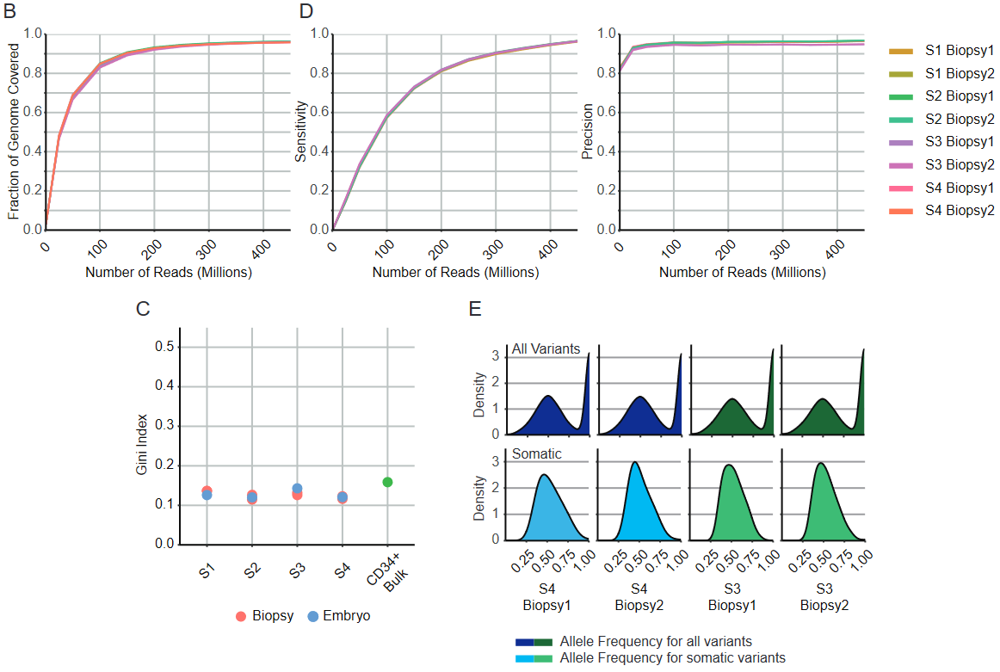Figure 1 B C D and E - PTA allows for high genome coverage and high equality of coverage across the genome. Additionally, PTA produces high sensitivity and precision.
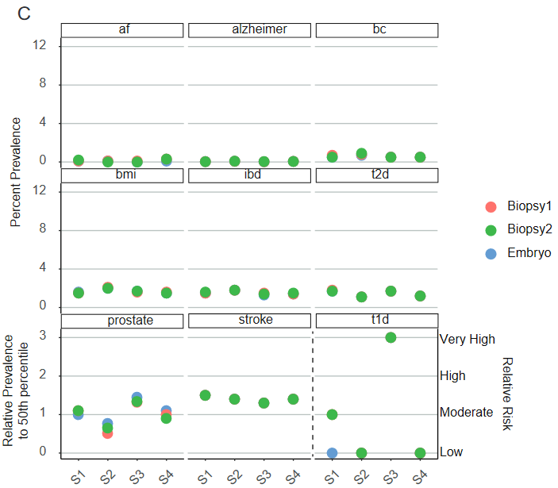Figure S3 C - Polygenic risk score (PRS) calculations for a few diseases are shown here for the biopsies and embryos. The biopsies and embryos are generally consistent in their calculations, providing evidence that PRS is a measure we can feasibly calculate from PGT. Our analysis showed embryo S3 as having an increased risk of type 1 diabetes (>=3X odds ratio). These types of calculations bring up many ethical considerations that will have to be confronted and have guidelines produced as methods such as accurate PGT become more commonly used in the near future.
cfDNA Monitoring in ALL
Connection: Since September 2019, I've been a data analyst for the Gawad Lab at Stanford.
Summary: This study used cell-free (cfDNA) collected from the peripheral blood of patients undergoing treatment for Acute Lymphoblastic Leukemia (ALL) to test whether we could monitor the two leading causes of mortality in this population: 1) disease persistence/relapse and 2) microbial infection. cfDNA from peripheral blood was compared with bone marrow biopies and cellular bone marrow aspirations. cfDNA was able to detect and monitor disease burden in most patients along with being able to display patterns in burden throughout treatment. The content of variants found in cfDNA was comparable to bone marrow biopsies and provides evidence that invasive biopsies may be unnecessary at diagnosis. Finally, within the microbial dynamics, we found evidence of herpes and polyoma virus reactivation.
Science Advances Link: Simultaneous Monitoring of Disease and Microbe Dynamics Through Plasma DNA Sequencing in Pediatric Patients with Acute Lymphoblastic Leukemia
doi: 10.1126/sciadv.abj1360
PMID: 35442732
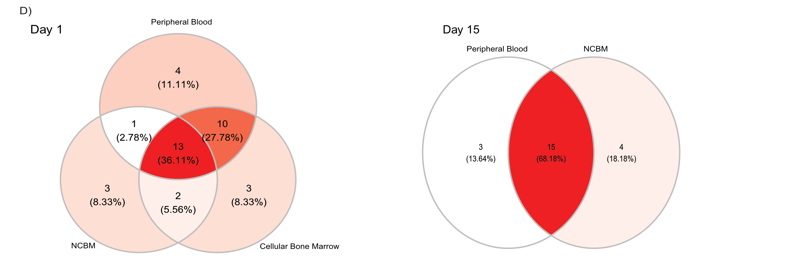Figure 2 D - Many of the same pathogenic variants were detected in peripheral blood cfDNA and in bone marrow, along with having unique variants for each method. This suggests both comparments are capturing most of the same variant information.
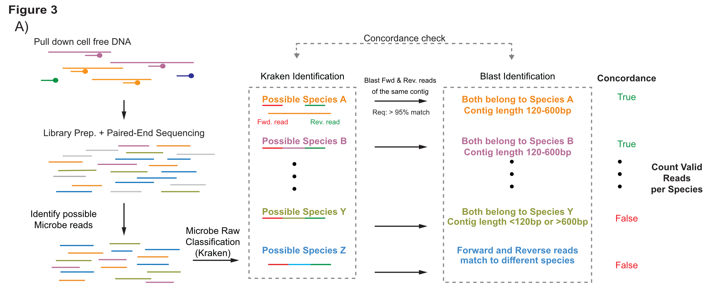Figure 3 A - We used a novel approach in an attempt to maximize accuracy in the identication of microbial species from peripheral blood cfDNA. We performed a concordance check using 2 microbial identicification methods (Kraken2 and BLAST) along with quality score filtering.
Whole Genome Amplification
Connection: Since September 2019, I've been a data analyst for the Gawad Lab at Stanford.
Summary: The Gawad Lab developed an innovative biochemical method for single-cell DNA (scDNA) Whole Genome Amplication (WGA) termmed Primary-template Directed Amplification (PTA) that can provide up to 99% accuracy in an even distribution across the entire human genome, a significant improvement over other leading scDNA WGA methods that only achieve 10-20% accuracy due to uneven amplification. This paper describes this novel method, compares it to competing methods, and demonstrates its improved ability to discover mutations and measure mutational rates. PTA is further applied to measure the mutation rates and location of CRISPR off-target sites, a major concern in the use of CRISPR technology.
PNAS Link: Accurate Genomic Variant Detection in Single Cells with Primary Template-Directed Amplification
doi: 10.1073/pnas.2024176118
PMID: 34099548
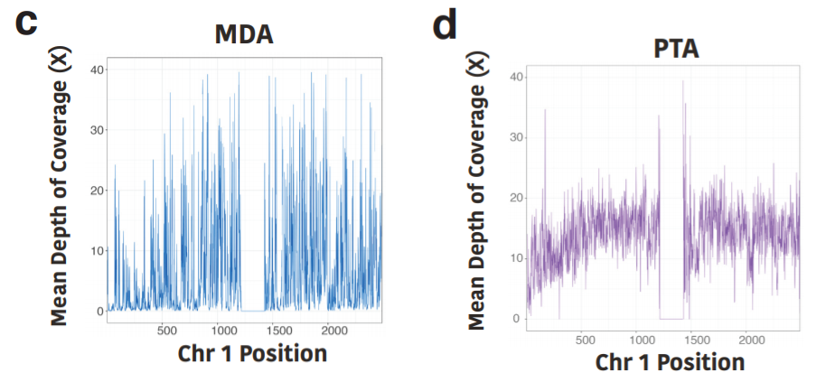Figure 1 C and D - When compared to the leading method MDA, PTA displays increased depth of coverage and improved equality of distribution across chromosome 1.
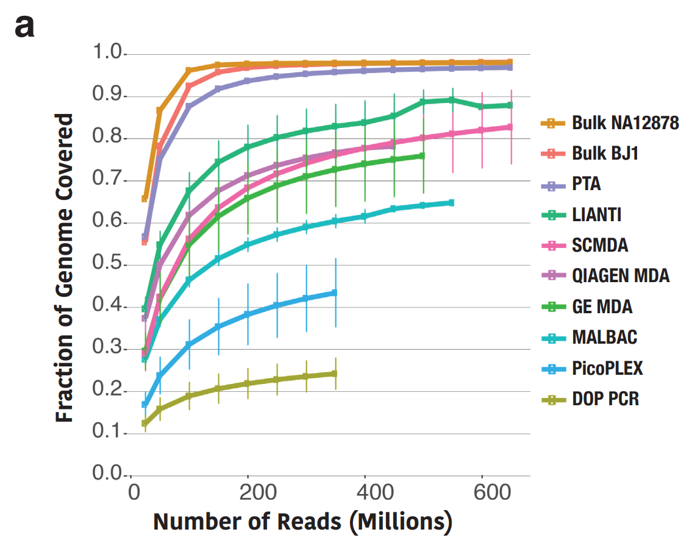Figure 2 A - Single-cell PTA displays whole genome coverage comparable to bulk sequencing, exceeding the ability of other leading scDNA WGA methods.
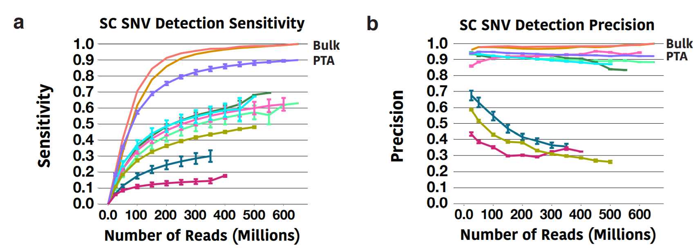Figure 3 A and B - Single-cell PTA displays single nucleotide variation sensitivity and precision comparable to bulk sequencing, exceeding the ability of other leading scDNA WGA methods.
Lentiviral Gene Therapy Literature Review
Connection: From August 2019 to December 2019, I completed this literature review to fulfill the thesis requirement needed for full competition of my Tufts Master of Science in Biomedical Sciences.
Summary: With the first FDA-approved gene therapy drugs having just been approved in 2017, research and development in gene therapy for the treatment of many genetic diseases is well underway. Designing safe viral vectors has been the largest obstacle in this research, but recent studies utilizing promoters that restrict gene expression to specific tissue- or cell-types show that this modification can increase both safety and efficacy. In this review, I focus on gene therapy that utilizes lentiviruses as viral vectors to deliver transgenes to cells and how using physiological promoters in these vectors is an improvement over traditional viral promoters.
PDF: Advances in viral vector design: Tissue- and cell-type specific promoters can improve the safety and efficacy of lentiviral gene therapy
Growth Rate Analysis
Connection: From September 2017 to May 2018, I programmed the improvements to computational automation involved in this Turbidostat device during my time in the Siegal Lab at NYU.
Objective: Improve the software for an open-source automated liquid cell culturing device, known as a Turbidostat.
Resources:
Original hardware and software: klavinslab.org/hardware.
Improvements to software: github.com/Flexostat.
In-depth explanation of improvements: Wiki.md
Turbidostat devices give experimenters control over stresses that microorganisms often adapt to, allowing researchers to better test their own mutated strains and how they adapt to specific applied stresses. The Siegal Lab at NYU uses an open source turbidostat design from the Klavins Lab to study the evolution of yeast. Growth rate can be indicative of fitness and adaptation but previously we would have to measure growth rate through an independent experiment. I have since created automated Python software programs that analyze the optical density (OD) and dilution (U) data produced by the turidostat to dynamically estimate the growth rate of yeast in the continuous culture, giving experimenters a real-time estimate of how their microorganisms are adapting to their environment.
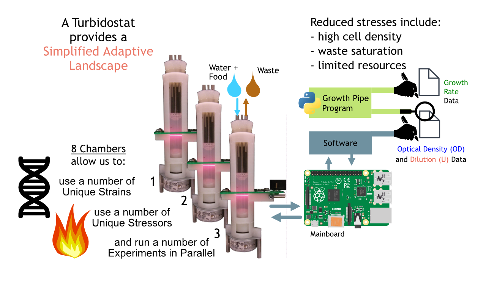Experimental Setup
The Turbidostat is an inexpensive, 3D printable, open source device developed by the Klavins Lab at the University of Washington. When a specific optical density has been reached, turbidostats dilute their growth chamber, removing some solution and adding some food and water. This decreases common stresses that microorganisms often adapt to such as high cell density, waste saturation, and limiting resources.
Previously, the turbidostat software did not compute growth so there was no way to estimate fitness. During an experiment it would also keep density near to the limit with repeated dilutions (U), which can be used to calculate growth rate but are inaccurate. We developed an automated pipeline to continuously calculate growth rate and new modes to run experiments that allow for more growth rates based on optical density (OD), which are more accurate.
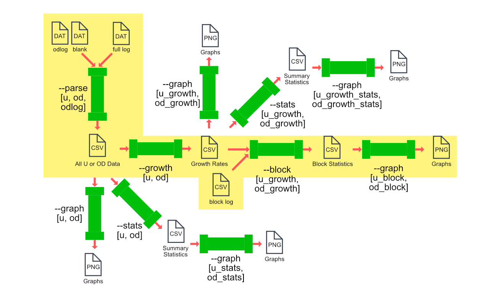Computational Pipeline
Our computational pipeline can dynamically calculate growth rates, calculate summary statistics, and generate graphs for either optical density or dilution data. It is highly configurable and easily automated.
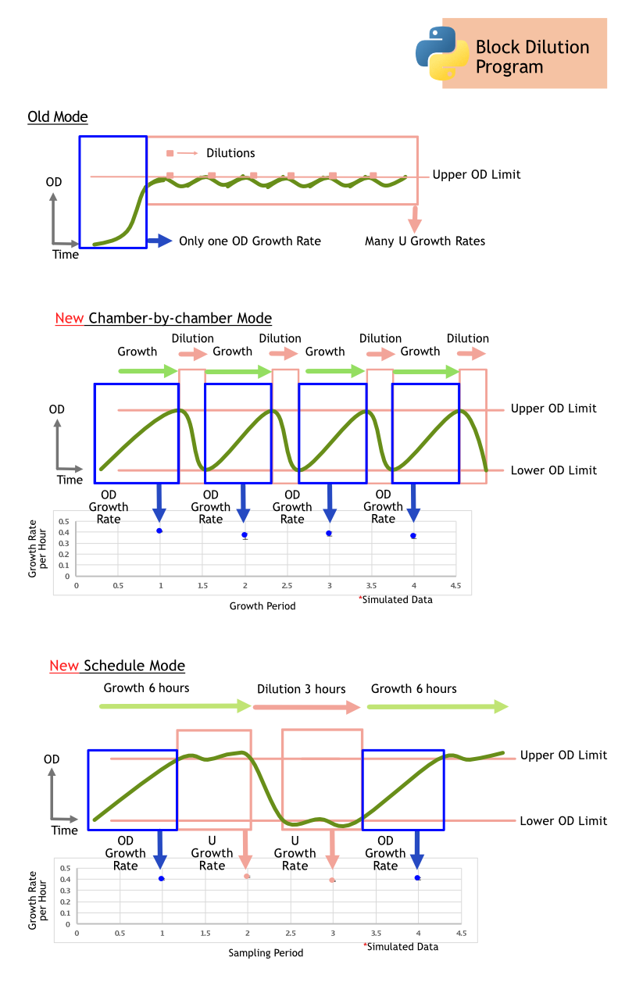Block Dilutions
Another program runs separate from the main experiment programs but modifies their goal optical density dynamically depending on the current OD measurements. This adds the ability to have short segments of large dilutions followed by large periods of exponential growth without dilution, which allows for more accurate and precise growth rate measurements to be taken from that period of exponential growth.
I've also created a program that allows you to quickly simulate an experiment with defined noise, starting OD, and growth rate, producing hours worth of data within seconds. This program can be used to plan real experiments and test modifications to the computational pipeline.
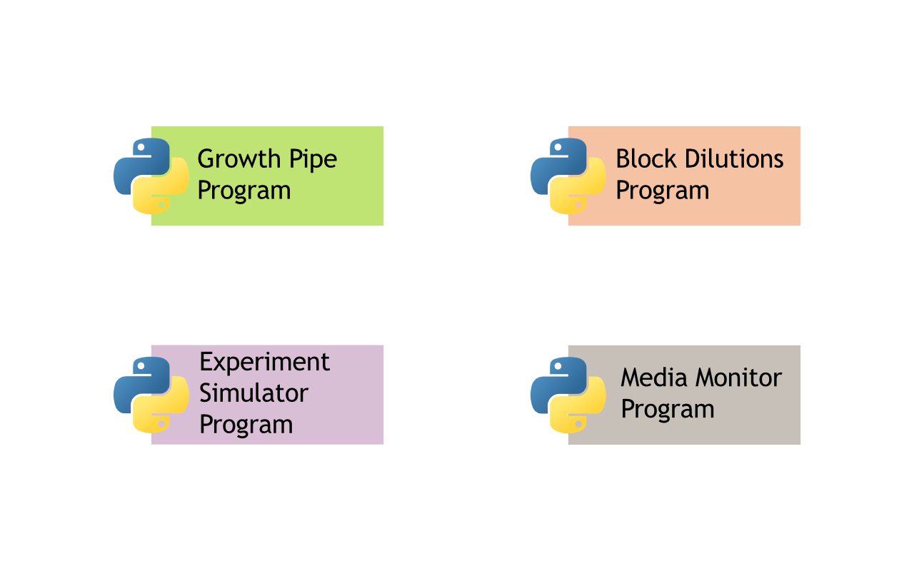In-depth descriptions on our Wiki.md
The programs and tests were presented at the 2018 NYU Dean's Undergraduate Research Program (DURF) Poster Conference. The poster can be found in the PDF below.
PDF: Computational tools for growth rate calculation in continuous culture
DisA Literature Review
Connection: From October 2017 to December 2017, I completed this literature review as the main project for an undergraduate microbiology course at NYU.
Summary: Spores exist in a metabolically inactive state that limits their ability to fend off DNA damage that accumulates before germination. It is only in the transition stages between spore and bacteria do DNA repair mechanisms re-active. The regulatory protein DisA has previously been shown to delay sporulation when DNA damage is found, but more recently has been shown to also delay outgrowth of a spore in a similar way. This paper explores recent findings in how DisA works in concert with DNA repair mechanisms, how it communicates regulatory messages, and its connections with other regulatory proteins during the germination stages.
PDF: Understanding the DNA repair mechanics of germination regulator DisA in Bacillus subtilis spores
Vocal Fold Paralysis
Connection: From June 2016 to August 2016 and again from June 2017 to August 2017, I contributed to the data analysis and patient coordination during my time in the cooperative UCSF Biomagnetic Imaging and Speech Neuroscience Labs.
Temporal specificity of abnormal neural oscillations during phonatory events in Laryngeal Dystonia
Abstract: Laryngeal Dystonia is a debilitating disorder of voicing in which the laryngeal muscles are intermittently in spasm resulting in involuntary interruptions during speech. This study investigated the timepoints and function of central nervous system activity during phonation. The results confirm the abnormal processing of somatosensory feedback that has been seen in other studies, along with producing several remarkable findings. First, patients have impaired vocal motor activity even before glottal movement onset, suggesting abnormal movement preparation that cannot be ascribed to deficits in vocal performance along with neural abnormalities that are more than just abnormal responses to sensory feedback during phonation. Second, abnormal auditory cortical activity in patients begins even before voice onset, suggesting abnormalities in setting up auditory predictions before the arrival of auditory feedback at voice onset. These findings may help characterize neuroimaging phenotypes and potential therapeutic targets for neuromodulation.
Brain Communications Link: Temporal specificity of abnormal neural oscillations during phonatory events in Laryngeal Dystonia
doi: 10.1093/braincomms/fcac031
PMID: 35356032
Cortical-Basal Ganglia-Cerebellar Networks in Unilateral Vocal Fold Paralysis: A Pilot Study
Objective: To evaluate differences in cortical-basal ganglia-cerebellar functional connectivity between treated unilateral vocal fold paralysis (UVFP) and healthy control cohorts using resting-state functional magnetic resonance imaging (RS-fMRI).
Results: UVFP patients demonstrated increased connectivity between both caudate nuclei and the precuneus, a node of the default mode network, compared to healthy controls. Both caudate nuclei also showed decreased connectivity with the left cerebellar hemisphere. The putamen and globus pallidus divisions of the basal ganglia were not abnormally connected to other brain structures.
The Laryngoscope Link: Cortical-Basal Ganglia-Cerebellar Networks in Unilateral Vocal Fold Paralysis: A Pilot Study
doi: 10.1002/lary.28004
PMID: 31070785
Cortical networks for speech motor control in unilateral vocal fold paralysis.
Objective: To evaluate brain networks for motor control of voice production in patients with treated unilateral vocal fold paralysis (UVFP).
Results: Whole-brain task-induced beta band activation patterns were qualitatively similar in both treated UVFP patients and healthy controls. Central vocal motor control plasticity in UVFP was expressed within constitutive components of central human communication networks identified in healthy controls. Treated UVFP patients exhibited statistically significant enhancement (P < 0.05) in beta band activity following pitch perturbation onset in left auditory cortex to 525 ms, left premotor cortex to 225 ms, and left and right frontal cortex to 525 ms.
The Laryngoscope Link: Cortical networks for speech motor control in unilateral vocal fold paralysis
doi: 10.1002/lary.27730
PMID: 30570142
Vocal motor control and central auditory impairments in unilateral vocal fold paralysis.
Objective: To evaluate differences in vocal motor control and central auditory processing between treated unilateral vocal fold paralysis (UVFP) and healthy control cohorts.
Results: Vocal motor control was impaired in treated UVFP. The UVFP cohort exhibited a 32.5% reduction in the instantaneous, subconscious compensatory response to pitch feedback perturbation in the interval between 150 ms and 550 ms following onset (P<0.0001, linear mixed effects model). This impairment cannot simply be ascribed to vocal motor capacity insufficiency in the UVFP cohort because both cohorts demonstrated comparable functional capacity to perform the vocal motor task. The UVFP cohort also showed greater propensity for central auditory processing impairment (P<0.05), notably for temporal compression and added noise challenges.
The Laryngoscope Link: Vocal motor control and central auditory impairments in unilateral vocal fold paralysis
doi: 10.1002/lary.27680
PMID: 30484858
Microbial Fuel Cells
Connection: From January 2016 to May 2016, I completed a research project studying improvements to Microbial fuel cells during my time interning at Tel Aviv University.
Summary: Microbial fuel cells (MFCs) utilize the natural metabolism of bacteria for generating electricity. At the end of a normal electron transport chain, the metabolism of organic material drives electrons across the inner mitochondrial membrane, pumping hydrogen into the inter-membrane space for later ATP production, and uses hydrogen and oxygen as final electron acceptors to produce water. In microbial fuel cells, there is an anode that bacteria form a biofilm on and utilize as the final electron acceptor, similar to the final complex in the electron transport chain. The electron runs to a cathode, creating an electrical current that we can utilize, and combines with oxygen at the cathode to produce water. This technology can be used in water treatment plants, where bacteria metabolize waste water and this technology can capture electricity from the process. Currently, MFCs are only able to generate small amounts of energy. I studied the effects of graphite and felt anodes for use in MFCs, as well as which species of bacteria are present within the MFC solution and on the anode. The main conclusion of the experiment was that the felt brush anode produced higher voltage than the graphite.
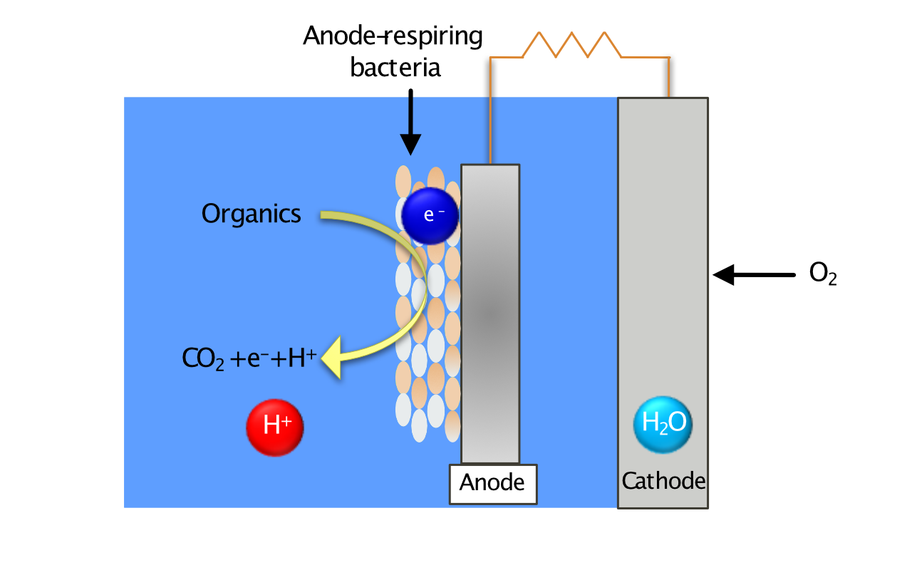Graphical representation of a microbial fuel cell.